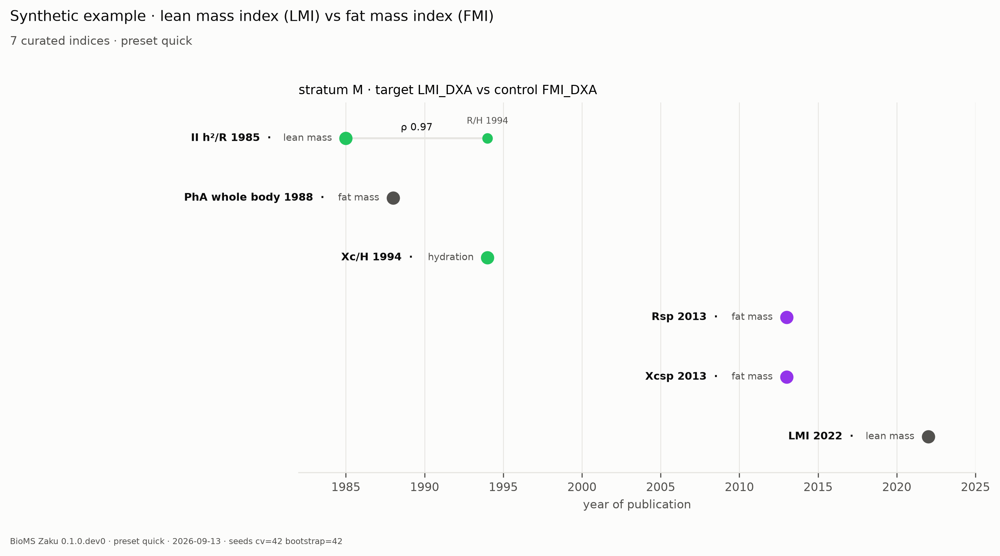
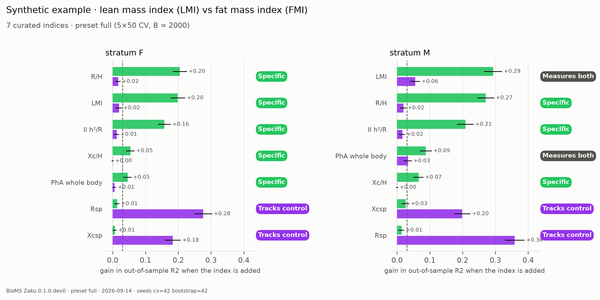
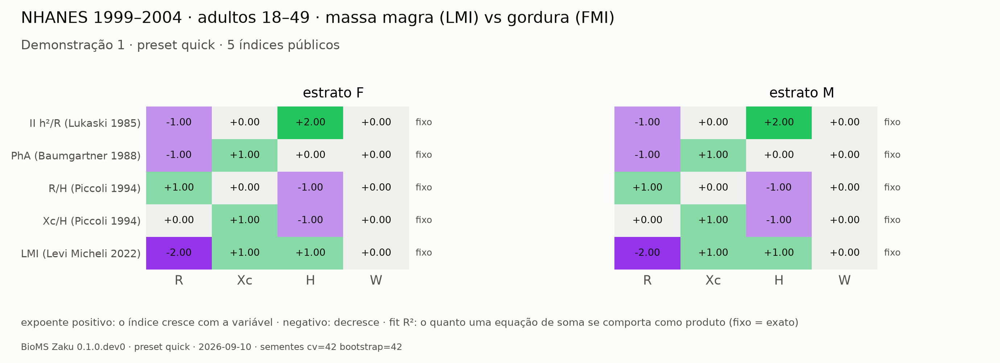
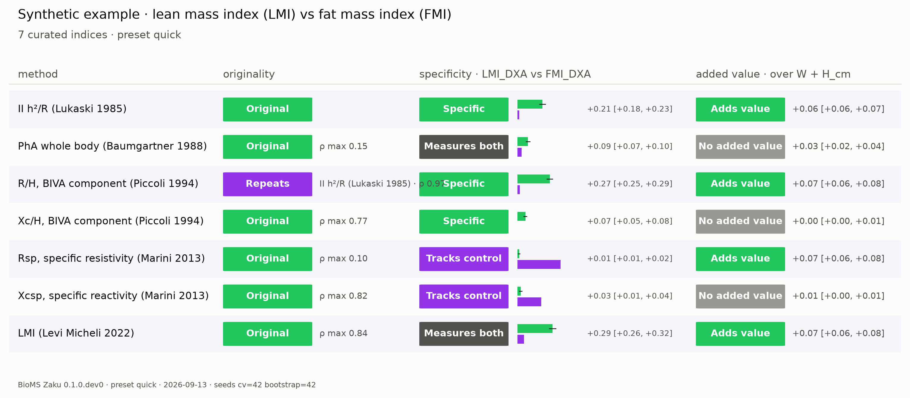

BioMS Zaku
Algebraic decomposition and out-of-sample audit of indices built from measured variables. Demonstrated on bioelectrical impedance.Descomposición algebraica y auditoría fuera de muestra de índices construidos a partir de variables medidas. Demostrado en bioimpedancia eléctrica.Decomposição algébrica e auditoria fora da amostra de índices construídos a partir de variáveis medidas. Demonstrado em bioimpedância elétrica.
1PurposePropósitoPropósito
An index is a formula that combines measured variables into one number: for example, height squared over resistance. Indices are usually validated by correlating each one, in isolation, with a reference measurement. That leaves three questions unanswered: whether a new index carries information different from earlier ones; whether it measures what it claims to measure or a confounder shared with the reference; and whether its validity depends on the population where it was derived. BioMS Zaku answers the three with one algebraic operation and one predictive audit, and produces the same four figures whatever the index or the outcome.Un índice es una fórmula que combina variables medidas en un número: por ejemplo, estatura al cuadrado sobre resistencia. Los índices suelen validarse correlacionando cada uno, aislado, con una medición de referencia. Eso deja tres preguntas sin respuesta: si un índice nuevo lleva información distinta de los anteriores; si mide lo que afirma medir o un confusor compartido con la referencia; y si su validez depende de la población donde se derivó. BioMS Zaku responde las tres con una operación algebraica y una auditoría predictiva, y produce las mismas cuatro figuras sea cual sea el índice o el desenlace.Um índice é uma fórmula que combina variáveis medidas em um número: por exemplo, altura ao quadrado sobre resistência. Índices costumam ser validados correlacionando cada um, isolado, com uma medida de referência. Isso deixa três perguntas sem resposta: se um índice novo carrega informação diferente dos anteriores; se ele mede o que afirma medir ou um confundidor compartilhado com a referência; e se a sua validade depende da população em que foi derivado. O BioMS Zaku responde às três com uma operação algébrica e uma auditoria preditiva, e produz as mesmas quatro figuras seja qual for o índice ou o desfecho.
2MethodMétodoMétodo
2.1Decomposition: every index is a vectorDescomposición: todo índice es un vectorDecomposição: todo índice é um vetor
Written as a product of powers of the variables, an index is fully described by its exponents. H²/R is the vector (R −1, Xc 0, H +2, W 0). Taking logarithms turns the product into a sum, so the index becomes a linear combination of the log-variables. If Σ is the covariance matrix of the log-variables in a population, the Pearson correlation between two indices with vectors a and b is aᵀΣb / √(aᵀΣa · bᵀΣb). This is an identity, not an estimate: it holds for any distribution of the data. It means the correlation between two indices can be predicted from Σ before either index is computed, and that two indices with nearly parallel vectors are redundant by construction. Indices that are not exact products (those containing an arctangent or a weighted sum, for instance) receive a fitted vector by log-linear regression, and the fit R² is reported next to them.Escrito como producto de potencias de las variables, un índice queda descrito por sus exponentes. H²/R es el vector (R −1, Xc 0, H +2, W 0). Al tomar logaritmos el producto se vuelve suma, y el índice, una combinación lineal de las log-variables. Si Σ es la matriz de covarianza de las log-variables en una población, la correlación de Pearson entre dos índices con vectores a y b es aᵀΣb / √(aᵀΣa · bᵀΣb). Es una identidad, no una estimación: vale para cualquier distribución. Así, la correlación entre dos índices se predice desde Σ antes de calcularlos, y dos índices con vectores casi paralelos son redundantes por construcción. Los índices que no son productos exactos (con arcotangente o suma ponderada) reciben un vector ajustado por regresión log-lineal, con su R² informado.Escrito como produto de potências das variáveis, um índice fica descrito pelos seus expoentes. H²/R é o vetor (R −1, Xc 0, H +2, W 0). Tomar logaritmos transforma o produto em soma, e o índice numa combinação linear das log-variáveis. Se Σ é a matriz de covariância das log-variáveis numa população, a correlação de Pearson entre dois índices com vetores a e b é aᵀΣb / √(aᵀΣa · bᵀΣb). É uma identidade, não uma estimativa: vale para qualquer distribuição dos dados. Logo, a correlação entre dois índices pode ser prevista a partir de Σ antes de calculá-los, e dois índices com vetores quase paralelos são redundantes por construção. Índices que não são produtos exatos (com arco-tangente ou soma ponderada, por exemplo) recebem um vetor ajustado por regressão log-linear, com o R² do ajuste informado ao lado.
Redundancy and precedence. The observed redundancy is measured with Spearman's rank correlation, which needs no assumption about scale or linearity. Two indices are declared redundant when |ρ| ≥ 0.95; the earlier publication keeps precedence (year, then date, then DOI). Exact transformations of an existing index (a rescaling, a change of unit) are labelled identities and never counted as discovered redundancy.Redundancia y precedencia. La redundancia observada se mide con la correlación de rangos de Spearman, sin supuesto de escala ni de linealidad. Dos índices son redundantes cuando |ρ| ≥ 0,95; la publicación anterior conserva la precedencia (año, fecha, DOI). Las transformaciones exactas de un índice existente se etiquetan como identidades y nunca cuentan como redundancia descubierta.Redundância e precedência. A redundância observada é medida pela correlação de postos de Spearman, sem suposição de escala nem de linearidade. Dois índices são declarados redundantes quando |ρ| ≥ 0,95; a publicação anterior mantém a precedência (ano, depois data, depois DOI). Transformações exatas de um índice existente (mudança de escala ou de unidade) são rotuladas como identidades e nunca contadas como redundância descoberta.
2.2Conditional negative control: what the index addsControl negativo condicional: qué añade el índiceControle negativo condicional: o que o índice acrescenta
The researcher declares a target (what the index should measure, e.g. lean mass by DXA) and a negative control (something the index should not measure but a confounder would, e.g. fat mass by DXA). Target and control are usually correlated: in the example population, 0.7. A simple comparison of how well the index predicts each of them would credit the index for the part of the target that the control also carries. The framework therefore asks two conditional questions, each answered by an out-of-sample gain in prediction score:El investigador declara un objetivo (lo que el índice debería medir, p. ej. masa magra por DXA) y un control negativo (algo que el índice no debería medir pero un confusor sí, p. ej. masa grasa por DXA). Objetivo y control suelen estar correlacionados: en la población de ejemplo, 0,7. Comparar sin más cuánto predice el índice a cada uno le daría crédito por la parte del objetivo que el control también lleva. Por eso el marco hace dos preguntas condicionales, cada una respondida por una ganancia fuera de muestra en el puntaje de predicción:O pesquisador declara um alvo (o que o índice deveria medir, por exemplo massa magra por DXA) e um controle negativo (algo que o índice não deveria medir, mas um confundidor mediria, por exemplo massa gorda por DXA). Alvo e controle costumam correlacionar: na população de exemplo, 0,7. Comparar simplesmente quanto o índice prediz cada um daria crédito ao índice pela parte do alvo que o controle também carrega. Por isso o framework faz duas perguntas condicionais, cada uma respondida por um ganho fora da amostra no escore de predição:
- S1 = score(target | control + index) − score(target | control): the signal about the target that the control does not carry.
- S2 = score(control | target + index) − score(control | target): the signal about the control that the target does not explain.
- S1 = puntaje(objetivo | control + índice) − puntaje(objetivo | control): la señal sobre el objetivo que el control no lleva.
- S2 = puntaje(control | objetivo + índice) − puntaje(control | objetivo): la señal sobre el control que el objetivo no explica.
- S1 = escore(alvo | controle + índice) − escore(alvo | controle): o sinal sobre o alvo que o controle não carrega.
- S2 = escore(controle | alvo + índice) − escore(controle | alvo): o sinal sobre o controle que o alvo não explica.
Scores are R² for continuous targets and AUROC for labels, always out of sample (repeated cross-validation for the point estimate; out-of-bag bootstrap for intervals). Every model in a contrast is fitted on the same resamples, so differences are paired. A gain counts as present when its mean exceeds a margin of 0.03, its 95 % percentile interval excludes zero and the fraction of resamples with a positive difference is at least 0.95. The verdict follows fixed rules: specific when S1 is present and S2 absent; tracks the control when the reverse; measures both when both are present (the index carries information that neither target nor control explains, such as body size); no signal when neither is. These verdicts are descriptive summaries under declared thresholds, not hypothesis tests.Los puntajes son R² para objetivos continuos y AUROC para etiquetas, siempre fuera de muestra (validación cruzada repetida para el punto; bootstrap out-of-bag para los intervalos). Todos los modelos de un contraste se ajustan en las mismas remuestras, así que las diferencias son pareadas. Una ganancia está presente cuando su media supera un margen de 0,03, su intervalo percentil 95 % excluye el cero y la fracción de remuestras con diferencia positiva es al menos 0,95. El veredicto sigue reglas fijas: específico con S1 presente y S2 ausente; sigue el control al revés; mide los dos con ambas presentes (información que ni objetivo ni control explican, como el tamaño corporal); sin señal con ninguna. Son resúmenes descriptivos bajo umbrales declarados, no pruebas de hipótesis.Os escores são R² para alvos contínuos e AUROC para rótulos, sempre fora da amostra (validação cruzada repetida para o ponto; bootstrap out-of-bag para os intervalos). Todos os modelos de um contraste são ajustados nas mesmas reamostras, então as diferenças são pareadas. Um ganho conta como presente quando a média supera uma margem de 0,03, o intervalo percentil de 95 % exclui zero e a fração de reamostras com diferença positiva é pelo menos 0,95. O veredito segue regras fixas: específico quando S1 está presente e S2 ausente; acompanha o controle quando o inverso; mede os dois quando ambos estão presentes (o índice carrega informação que nem alvo nem controle explicam, como tamanho corporal); sem sinal quando nenhum está. São resumos descritivos sob limiares declarados, não testes de hipótese.
2.3Transfer of Σ between populationsTransferencia de Σ entre poblacionesTransferência de Σ entre populações
Σ describes one population. Applying the Σ of stratum A to predict the correlations observed in stratum B measures how far redundancy transfers. The framework reports the own error (Σ of the same stratum; zero for exact products, by the identity) and the transferred error, pair by pair, with the median excess and its 95 % interval from a bootstrap over the persons of the observed stratum, plus the fraction of pairs within a fixed tolerance of 0.05. None of these summaries depends on the sample size, unlike a fraction of pairs inside a confidence interval.Σ describe una población. Aplicar la Σ del estrato A para predecir las correlaciones observadas en el estrato B mide cuánto se transfiere la redundancia. El marco informa el error propio (Σ del mismo estrato; cero para productos exactos, por la identidad) y el error transferido, par a par, con el exceso mediano y su intervalo 95 % por bootstrap sobre las personas del estrato observado, más la fracción de pares dentro de una tolerancia fija de 0,05. Ninguno de estos resúmenes depende del tamaño muestral.Σ descreve uma população. Aplicar a Σ do estrato A para prever as correlações observadas no estrato B mede o quanto a redundância se transfere. O framework reporta o erro próprio (Σ do mesmo estrato; zero para produtos exatos, pela identidade) e o erro transferido, par a par, com o excesso mediano e o seu intervalo de 95 % por bootstrap sobre as pessoas do estrato observado, além da fração de pares dentro de uma tolerância fixa de 0,05. Nenhum desses resumos depende do tamanho da amostra, ao contrário de uma fração de pares dentro de um intervalo de confiança.
2.4Design of a new index (experimental)Diseño de un índice nuevo (experimental)Desenho de um índice novo (experimental)
Exponents can be fitted to a declared target on a design partition (70 % by default, within each stratum) and the resulting index audited on the disjoint partition with the same conditional control. The framework refuses to design unless the user declares that the target is not computed from any mapped variable. This capability is implemented and tested on synthetic data; it has not yet been validated on a real design problem and is labelled experimental.Los exponentes pueden ajustarse a un objetivo declarado en una partición de diseño (70 % por defecto, dentro de cada estrato) y el índice resultante auditarse en la partición disjunta con el mismo control condicional. El marco no diseña sin la declaración de que el objetivo no se calcula desde ninguna variable mapeada. Esta capacidad está implementada y probada en datos sintéticos; aún no se validó en un problema real y se etiqueta experimental.Os expoentes podem ser ajustados a um alvo declarado numa partição de desenho (70 % por padrão, dentro de cada estrato) e o índice resultante auditado na partição disjunta com o mesmo controle condicional. O framework não desenha sem a declaração de que o alvo não é calculado a partir de nenhuma variável mapeada. Esta capacidade está implementada e testada em dados sintéticos; ainda não foi validada num problema real de desenho e é rotulada experimental.
3How to read the figuresCómo leer las figurasComo ler as figuras
The four figures below come from one run on the example dataset (section 8): seven curated indices, target = lean mass index by DXA, negative control = fat mass index by DXA, strata = sex. Throughout, green is the target side (specific, original, adds value) and violet the control side (tracks the control, repeats an earlier index); grey marks the remaining cases. Figures carry no explanatory legend: this section is the legend.Las cuatro figuras provienen de una ejecución sobre los datos de ejemplo (sección 8): siete índices curados, objetivo = índice de masa magra por DXA, control negativo = índice de masa grasa por DXA, estratos = sexo. En todas, verde es el lado del objetivo (específico, original, agrega valor) y violeta el lado del control (sigue el control, repite un índice anterior); el gris marca los demás casos. Las figuras no llevan leyenda explicativa: esta sección es la leyenda.As quatro figuras vêm de uma rodada nos dados de exemplo (seção 8): sete índices curados, alvo = índice de massa magra por DXA, controle negativo = índice de massa gorda por DXA, estratos = sexo. Em todas, verde é o lado do alvo (específico, original, acrescenta valor) e violeta o lado do controle (acompanha o controle, repete um índice anterior); cinza marca os demais casos. As figuras não trazem legenda explicativa: esta seção é a legenda.
3.1Family tree: who came first, who repeats whom, who is specificÁrbol genealógico: quién vino primero, quién repite a quién, quién es específicoÁrvore genealógica: quem veio antes, quem repete quem, quem é específico

3.2Paired bars: what each index adds to target and to controlBarras pareadas: qué añade cada índice al objetivo y al controlBarras pareadas: o que cada índice acrescenta ao alvo e ao controle

3.3Exponent vectors and Σ: what each index is made ofVectores de exponentes y Σ: de qué está hecho cada índiceVetores de expoentes e Σ: de que cada índice é feito

3.4Verdict sheet: the three answers per indexFicha de veredictos: las tres respuestas por índiceFicha de vereditos: as três respostas por índice

4Rigour: what the code enforcesRigor: lo que el código imponeRigor: o que o código impõe
- Every reported score is out of sample; no number comes from data seen in fitting.
- Every contrast is paired: target and control, model with and without the index, estimator A and B, always on identical resamples. Resampling is a deterministic function of the rows, the seed, B and the minimum out-of-bag size; parallelism never changes a number.
- Estimators are declared before the data (ridge regression; L2 logistic regression) and never chosen by result. A second estimator can be run as a sensitivity analysis on the same resamples, reported, never selected.
- No imputation by default: each index is evaluated on its complete cases; paired contrasts use rows complete on both sides.
- Thresholds (redundancy 0.95, margin 0.03, P 0.95, interval 95 %) are fixed in the contracts and written in the manifest.
- Catalogue formulas are parsed by a whitelist syntax tree (no
eval); monomial vectors are validated numerically against the formula at load, and a vector is either exact or the entry is declared composite; published numeric examples are recomputed at load. - The manifest records the resolved configuration, seeds, library versions, the SHA-256 of the input and of every output. Two identical runs give identical hashes.
- Outputs contain only aggregates: no table or figure carries an individual's row.
- Todo puntaje informado es fuera de muestra; ningún número proviene de datos vistos en el ajuste.
- Todo contraste es pareado: objetivo y control, modelo con y sin el índice, estimador A y B, siempre en remuestras idénticas. El remuestreo es función determinista de las filas, la semilla, B y el mínimo out-of-bag; el paralelismo nunca cambia un número.
- Los estimadores se declaran antes de los datos (regresión ridge; logística L2) y nunca se eligen por resultado. Un segundo estimador puede correr como sensibilidad en las mismas remuestras, informado, nunca seleccionado.
- Sin imputación por defecto: cada índice se evalúa en sus casos completos; los contrastes pareados usan filas completas a ambos lados.
- Los umbrales (redundancia 0,95, margen 0,03, P 0,95, intervalo 95 %) están fijos en los contratos y escritos en el manifiesto.
- Las fórmulas del catálogo se analizan con un árbol sintáctico de lista blanca (sin
eval); los vectores monomiales se validan numéricamente contra la fórmula al cargar, y un vector es exacto o la entrada se declara compuesta; los ejemplos numéricos publicados se recalculan al cargar. - El manifiesto registra la configuración resuelta, semillas, versiones de bibliotecas, el SHA-256 de la entrada y de cada salida. Dos ejecuciones idénticas dan hashes idénticos.
- Las salidas contienen solo agregados: ninguna tabla o figura lleva la fila de un individuo.
- Todo escore reportado é fora da amostra; nenhum número vem de dado visto no ajuste.
- Todo contraste é pareado: alvo e controle, modelo com e sem o índice, estimador A e B, sempre em reamostras idênticas. A reamostragem é função determinística das linhas, da semente, de B e do mínimo out-of-bag; o paralelismo nunca muda um número.
- Os estimadores são declarados antes dos dados (regressão ridge; logística L2) e nunca escolhidos pelo resultado. Um segundo estimador pode rodar como sensibilidade nas mesmas reamostras, reportado, nunca selecionado.
- Sem imputação por padrão: cada índice é avaliado nos seus casos completos; contrastes pareados usam linhas completas dos dois lados.
- Os limiares (redundância 0,95, margem 0,03, P 0,95, intervalo 95 %) estão fixos nos contratos e escritos no manifesto.
- As fórmulas do catálogo são analisadas por uma árvore sintática de lista branca (sem
eval); vetores monomiais são validados numericamente contra a fórmula na carga, e um vetor é exato ou a entrada é declarada composta; exemplos numéricos publicados são recalculados na carga. - O manifesto registra a configuração resolvida, sementes, versões das bibliotecas, o SHA-256 da entrada e de cada saída. Duas rodadas idênticas dão hashes idênticos.
- As saídas contêm só agregados: nenhuma tabela ou figura carrega a linha de um indivíduo.
5Scope and limitsAlcance y límitesEscopo e limites
- Positive variables, log scale. Every mapped variable must be strictly positive; rows with zero or negative values are excluded and counted, never transformed.
- Whole-body, tetrapolar, one declared frequency. R and Xc at 50 kHz by default; other frequencies are mapped explicitly (e.g. Z5, Z200). Segmental impedance is out of scope. One device per dataset: phase angle and vector position differ between instruments and electrode types (Genton 2017; Nescolarde 2016), so cross-device comparisons are not attempted.
- Σ describes one population. Transfer between strata is measured, not assumed; in the source data of the example, transfer between sexes carries a median excess error of about 0.03 with an interval excluding zero.
- Verdicts are descriptive. They summarise out-of-sample gains under declared thresholds. They depend on the negative control chosen by the researcher: a poor control makes the audit uninformative, not wrong. A target computed from the mapped variables produces circular results that no control can detect; the framework asks for an explicit declaration.
- Prediction, not agreement. The audit measures information (R², AUROC), not calibration. A predictive equation can rank well and still be biased in absolute terms; agreement analysis remains necessary for equations.
- Convenience samples. The framework does not estimate population parameters; survey weights are ignored by design and verdicts describe the sample analysed.
- Linear estimators by default. Ridge and logistic regression on standardised log-indices; a boosting estimator exists for index combinations and for sensitivity, off by default.
- Variables positivas, escala log. Toda variable mapeada debe ser estrictamente positiva; las filas con cero o negativos se excluyen y se cuentan, nunca se transforman.
- Cuerpo entero, tetrapolar, una frecuencia declarada. R y Xc a 50 kHz por defecto; otras frecuencias se mapean explícitamente (Z5, Z200). La impedancia segmentaria queda fuera. Un equipo por base: el ángulo de fase y la posición del vector difieren entre instrumentos y electrodos (Genton 2017; Nescolarde 2016).
- Σ describe una población. La transferencia entre estratos se mide, no se supone; en los datos fuente del ejemplo, entre sexos hay un exceso mediano de error de unos 0,03 con intervalo que excluye el cero.
- Los veredictos son descriptivos. Resumen ganancias fuera de muestra bajo umbrales declarados. Dependen del control negativo elegido: un control pobre vuelve la auditoría poco informativa, no errónea. Un objetivo calculado desde las variables mapeadas produce resultados circulares que ningún control detecta; el marco exige una declaración explícita.
- Predicción, no concordancia. La auditoría mide información (R², AUROC), no calibración. Una ecuación puede ordenar bien y estar sesgada en términos absolutos; el análisis de concordancia sigue siendo necesario para ecuaciones.
- Muestras por conveniencia. El marco no estima parámetros poblacionales; los pesos muestrales se ignoran por diseño.
- Estimadores lineales por defecto. Ridge y logística sobre log-índices estandarizados; existe un estimador de boosting para combinaciones y sensibilidad, apagado por defecto.
- Variáveis positivas, escala log. Toda variável mapeada precisa ser estritamente positiva; linhas com zero ou valores negativos são excluídas e contadas, nunca transformadas.
- Corpo inteiro, tetrapolar, uma frequência declarada. R e Xc a 50 kHz por padrão; outras frequências são mapeadas explicitamente (Z5, Z200). Impedância segmentar está fora do escopo. Um aparelho por base: ângulo de fase e posição do vetor diferem entre instrumentos e tipos de eletrodo (Genton 2017; Nescolarde 2016), por isso comparações entre aparelhos não são tentadas.
- Σ descreve uma população. A transferência entre estratos é medida, não suposta; nos dados de origem do exemplo, a transferência entre sexos tem excesso mediano de erro de cerca de 0,03 com intervalo que exclui zero.
- Vereditos são descritivos. Resumem ganhos fora da amostra sob limiares declarados. Dependem do controle negativo escolhido pelo pesquisador: um controle ruim torna a auditoria pouco informativa, não errada. Um alvo calculado a partir das variáveis mapeadas produz resultados circulares que nenhum controle detecta; o framework exige declaração explícita.
- Predição, não concordância. A auditoria mede informação (R², AUROC), não calibração. Uma equação preditiva pode ordenar bem e ainda ter viés absoluto; a análise de concordância continua necessária para equações.
- Amostras por conveniência. O framework não estima parâmetros populacionais; pesos amostrais são ignorados por desenho e os vereditos descrevem a amostra analisada.
- Estimadores lineares por padrão. Ridge e logística sobre log-índices padronizados; existe um estimador de boosting para combinações e sensibilidade, desligado por padrão.
- Definitional coupling of target and control (v0.6). Lean and fat from the same DXA scan, both divided by height², sum with bone to the mapped weight: in the space of the mapped variables they can point almost the same way, and an index near that direction (W/H²-like) predicts both by arithmetic. The framework fits the implicit exponent vector of each target and control, reports the Σ-cosines index–target, index–control and target–control, checks the exact identity r_log = cos_Σ·√R² on monomial indices, and raises two flags with declared thresholds (‡). On the example, cos_Σ(target, control) is 0.90 in women and 0.86 in men for LMI vs FMI; absolute masses (kg) lower it to 0.84 and 0.77 but do not remove it, because the coupling through weight remains. Flags annotate; the verdict stays empirical.
- Acoplamiento definicional entre objetivo y control (v0.6). Magro y graso del mismo DXA, ambos divididos por estatura², suman con el hueso el peso mapeado: en el espacio de las variables mapeadas pueden apuntar casi igual, y un índice cercano (tipo W/H²) predice ambos por aritmética. El marco ajusta el vector implícito de cada objetivo y control, informa los cosenos bajo Σ, verifica la identidad exacta r_log = cos_Σ·√R² en índices monomiales y levanta dos marcas con umbrales declarados (‡). En el ejemplo, cos_Σ(objetivo, control) es 0,90 en mujeres y 0,86 en hombres; las masas absolutas (kg) lo bajan a 0,84 y 0,77 sin eliminarlo. Las marcas anotan; el veredicto sigue siendo empírico.
- Acoplamento definicional entre alvo e controle (v0.6). Magro e gordo do mesmo DXA, ambos divididos por altura², somam com o osso o peso mapeado: no espaço das variáveis mapeadas podem apontar quase na mesma direção, e um índice próximo dela (tipo W/H²) prediz os dois por aritmética. O framework ajusta o vetor implícito de cada alvo e controle, reporta os cossenos sob Σ índice–alvo, índice–controle e alvo–controle, confere a identidade exata r_log = cos_Σ·√R² nos índices monomiais e acende duas bandeiras com limiares declarados (‡). No exemplo, cos_Σ(alvo, controle) é 0,90 nas mulheres e 0,86 nos homens para LMI vs FMI; massas absolutas (kg) baixam para 0,84 e 0,77 sem remover, porque o acoplamento pelo peso permanece. As bandeiras anotam; o veredito continua empírico.
6UseUsoUso
Input: one table, one row per person, with the measured variables (strictly positive), at least one target and one negative control, optional covariates, strata and identifier. Three commands:Entrada: una tabla, una fila por persona, con las variables medidas (positivas), al menos un objetivo y un control negativo, covariables, estratos e identificador opcionales. Tres comandos:Entrada: uma tabela, uma linha por pessoa, com as variáveis medidas (estritamente positivas), pelo menos um alvo e um controle negativo, covariáveis, estratos e identificador opcionais. Três comandos:
pip install bioms-zaku
bioms-zaku init data.csv # builds the configuration; asks which column is R, Xc, height, weight, target, control (+ sex, age, circumferences)
bioms-zaku check data.zaku.yaml # validates data and configuration without running (rows, classes, pairing, bootstrap feasibility, circularity)
bioms-zaku run data.zaku.yaml # preset full: 5×50 CV, 2000 paired resamples · preset quick: demonstrations onlyOutputs: aggregate tables at full precision (algebra, pairs, redundancy, audit, utility, sigma_transfer, screening), manifest.json, summary.md, the four figures (PNG and PDF) and a single-file report.html. Figure title, subtitle, language (en, es, pt) and palette are set in the configuration.Salidas: tablas agregadas con precisión completa (algebra, pairs, redundancy, audit, utility, sigma_transfer, screening), manifest.json, summary.md, las cuatro figuras (PNG y PDF) y un report.html único. Título, subtítulo, idioma y paleta de las figuras se fijan en la configuración.Saídas: tabelas agregadas com precisão completa (algebra, pairs, redundancy, audit, utility, sigma_transfer, screening), manifest.json, summary.md, as quatro figuras (PNG e PDF) e um report.html único. Título, subtítulo, idioma (en, es, pt) e paleta das figuras são definidos na configuração.
7CatalogueCatálogoCatálogo
Eight public bioimpedance indices, each re-verified on its primary source. Every entry records the formula with page and table, the derivation sample separately from the author-stated validity (outside it the framework flags † and never blocks), the declared kind of target, and each curation event. Predictive equations from the literature are added one at a time after the same reading.Ocho índices públicos de bioimpedancia, cada uno re-verificado en su fuente primaria. Cada entrada registra la fórmula con página y tabla, la muestra de derivación aparte de la validez declarada por el autor (fuera de ella el marco marca † y nunca bloquea), el tipo de objetivo declarado y cada evento de curaduría. Las ecuaciones predictivas se agregan una a una tras la misma lectura.Oito índices públicos de bioimpedância, cada um reverificado na fonte primária. Cada entrada registra a fórmula com página e tabela, a amostra de derivação separada da validade declarada pelo autor (fora dela o framework marca † e nunca bloqueia), o tipo de alvo declarado e cada evento de curadoria. Equações preditivas da literatura entram uma a uma após a mesma leitura.
| index | formula | primary source | declared kindtipo declaradotipo declarado |
|---|---|---|---|
| H²/|Z| | H² / Z at 100 kHz | Hoffer, Meador & Simpson 1969, J Appl Physiol 27:531 | body water |
| H²/R | H² / R at 50 kHz | Lukaski et al. 1985, Am J Clin Nutr 41:810 | lean mass |
| PhA (whole body) | atan(Xc/R), degrees | Baumgartner, Chumlea & Roche 1988, Am J Clin Nutr 48:16 | fat mass |
| R/H, Xc/H | R / H, Xc / H (Ω/m) | Piccoli et al. 1994, Kidney Int 46:534 | hydration |
| Rsp, Xcsp | R·A/L, Xc·A/L (Ω·cm; A from three circumferences, L = 1.1·H) | Marini et al. 2013, J Nutr Health Aging 17:515; validated by Buffa et al. 2013, PLoS ONE 8:e58533 | fat mass |
| LMI | PhA · H / R | Levi Micheli et al. 2022, Biology 11:1182 | lean mass |
| Z200/Z5 | |Z| 200 kHz / |Z| 5 kHz | commercial origin; reviews Mulasi 2015, Lukaski 2017 (low confidence) | hydration |
8Example dataDatos de ejemploDados de exemplo
The package ships examples/example_data.csv: 8 000 synthetic rows, 4 000 per sex, drawn from a multivariate log-normal distribution whose mean vector and log-covariance Σ were estimated, per sex, from a convenience sample of adults with measured DXA and 50 kHz bioimpedance (n = 2 792 women, 3 036 men). No real row is reproduced; only μ and Σ left the source, and they are published in example_data_params.json together with the skew and kurtosis of the source logs, the generator script and its seed. The file contains R, Xc, height, weight, age, three circumferences, DXA lean, appendicular and fat indices, and one declared synthetic binary label. It exists so that the method can be learned, the tool tested, and Σ decomposed by hand against published parameters. Because the generator is log-normal, the example is smoother than real data; robustness to heavy tails is not what it demonstrates. Since v0.6 it also carries lean_kg, alm_kg and fat_kg, derived as index × height² (no new draw), so absolute masses can be used as targets (examples/example_kg.yaml).El paquete incluye examples/example_data.csv: 8 000 filas sintéticas, 4 000 por sexo, extraídas de una log-normal multivariante cuyo vector de medias y covarianza de logs Σ se estimaron, por sexo, en una muestra por conveniencia de adultos con DXA medida y bioimpedancia a 50 kHz (n = 2 792 mujeres, 3 036 hombres). No se reproduce ninguna fila real; solo μ y Σ salieron de la fuente y están publicados en example_data_params.json con la asimetría y curtosis de los logs de origen, el generador y su semilla. Contiene R, Xc, estatura, peso, edad, tres perímetros, índices DXA magro, apendicular y graso, y una etiqueta binaria sintética declarada. Existe para aprender el método, probar la herramienta y descomponer Σ a mano contra parámetros publicados. Por ser log-normal, es más suave que los datos reales; no demuestra robustez a colas pesadas. Desde v0.6 incluye también lean_kg, alm_kg y fat_kg, derivados como índice × estatura² (sin nuevo sorteo), para usar masas absolutas como objetivo (examples/example_kg.yaml).O pacote traz examples/example_data.csv: 8 000 linhas sintéticas, 4 000 por sexo, sorteadas de uma log-normal multivariada cujo vetor de médias e covariância dos logs Σ foram estimados, por sexo, numa amostra por conveniência de adultos com DXA medida e bioimpedância a 50 kHz (n = 2 792 mulheres, 3 036 homens). Nenhuma linha real é reproduzida; só μ e Σ saíram da fonte, e estão publicados em example_data_params.json com a assimetria e a curtose dos logs de origem, o gerador e a sua semente. O arquivo contém R, Xc, altura, peso, idade, três perímetros, índices DXA magro, apendicular e gordo, e um rótulo binário sintético declarado. Existe para que o método seja aprendido, a ferramenta testada e Σ decomposta à mão contra parâmetros publicados. Por ser log-normal, o exemplo é mais suave que dados reais; robustez a caudas pesadas não é o que ele demonstra. Desde a v0.6 traz também lean_kg, alm_kg e fat_kg, derivados como índice × altura² (sem sorteio novo), para usar massas absolutas como alvo (examples/example_kg.yaml).
9VerificationVerificaciónVerificação
Every check runs from the repository alone; no test reads data outside it. The suite checks the algebra against hand-calculated cases (the lessons notebook) and exact identities on random data; the audit on synthetic cases with a constructed answer (a specific index versus a size index, gain only from new information, the design partition recovering the generating vector); determinism of every output hash across runs; the catalogue examples from the primary sources; the shipped example against its published parameters (the CSV is reproduced byte for byte from the parameters file, and the published Σ predicts the observed correlation between monomial indices); and the command line. Continuous integration runs the whole suite on Python 3.10, 3.11 and 3.12 at every change; a pre-commit hook refuses commits when it fails.Toda verificación se ejecuta desde el repositorio solo; ninguna prueba lee datos externos. La batería verifica el álgebra contra casos calculados a mano (el cuaderno de lecciones) e identidades exactas en datos aleatorios; la auditoría en casos sintéticos con respuesta construida (índice específico frente a índice de tamaño, ganancia solo con información nueva, la partición del diseño recupera el vector generador); el determinismo de cada hash de salida; los ejemplos del catálogo tomados de las fuentes primarias; los datos de ejemplo contra sus parámetros publicados (el CSV se reproduce byte a byte desde el archivo de parámetros, y la Σ publicada predice la correlación observada entre índices monomiales); y la línea de comandos. La integración continua ejecuta toda la batería en Python 3.10, 3.11 y 3.12 en cada cambio; un hook de pre-commit rechaza commits cuando falla.Toda verificação roda a partir do repositório sozinho; nenhum teste lê dado externo. A bateria confere a álgebra contra casos calculados à mão (o caderno de lições) e identidades exatas em dados aleatórios; a auditoria em casos sintéticos com resposta construída (índice específico contra índice de tamanho, ganho só com informação nova, a partição do desenho recupera o vetor gerador); o determinismo de cada hash de saída entre rodadas; os exemplos do catálogo tirados das fontes primárias; os dados de exemplo contra os seus parâmetros publicados (o CSV é reproduzido byte a byte a partir do arquivo de parâmetros, e a Σ publicada prevê a correlação observada entre índices monomiais); e a linha de comando. A integração contínua roda toda a bateria em Python 3.10, 3.11 e 3.12 a cada mudança; um hook de pré-commit recusa commits quando ela falha.
10CiteCitarCitar
Mota T, Martins C, Oliveira Gonçalves LC. BioMS Zaku: an algebraic and predictive framework to decompose, audit
and design bioimpedance indices and equations. Version 0.1.0.dev0. MIT. https://github.com/bioms-zaku-framework/bioms-zaku11ReferencesReferenciasReferências
- Hoffer EC, Meador CK, Simpson DC. Correlation of whole-body impedance with total body water volume. J Appl Physiol 1969;27:531–534.
- Lukaski HC, Johnson PE, Bolonchuk WW, Lykken GI. Assessment of fat-free mass using bioelectrical impedance measurements of the human body. Am J Clin Nutr 1985;41:810–817.
- Baumgartner RN, Chumlea WC, Roche AF. Bioelectric impedance phase angle and body composition. Am J Clin Nutr 1988;48:16–23.
- Chumlea WC, Baumgartner RN, Roche AF. Specific resistivity used to estimate fat-free mass from segmental body measures of bioelectric impedance. Am J Clin Nutr 1988;48:7–15.
- Piccoli A, Rossi B, Pillon L, Bucciante G. A new method for monitoring body fluid variation by bioimpedance analysis: the RXc graph. Kidney Int 1994;46:534–539.
- Marini E, Sergi G, Succa V, et al. Efficacy of specific bioelectrical impedance vector analysis (BIVA) for assessing body composition in the elderly. J Nutr Health Aging 2013;17:515–521.
- Buffa R, Saragat B, Cabras S, Rinaldi AC, Marini E. Accuracy of specific BIVA for the assessment of body composition in the United States population. PLoS ONE 2013;8:e58533.
- Levi Micheli M, Cannataro R, Gulisano M, Mascherini G. Proposal of a new parameter for evaluating muscle mass in footballers through bioimpedance analysis. Biology 2022;11:1182.
- Mulasi U, Kuchnia AJ, Cole AJ, Earthman CP. Bioimpedance at the bedside: current applications, limitations, and opportunities. Nutr Clin Pract 2015;30:180–193.
- Lukaski HC, Kyle UG, Kondrup J. Assessment of adult malnutrition and prognosis with bioelectrical impedance analysis: phase angle and impedance ratio. Curr Opin Clin Nutr Metab Care 2017;20:330–339.
- Kyle UG, Bosaeus I, De Lorenzo AD, et al. Bioelectrical impedance analysis, part I: review of principles and methods. Clin Nutr 2004;23:1226–1243.
- Kronmal RA. Spurious correlation and the fallacy of the ratio standard revisited. J R Stat Soc A 1993;156:379–392.
- Atchley WR, Gaskins CT, Anderson D. Statistical properties of ratios. I. Empirical results. Syst Zool 1976;25:137–148.
- Lipsitch M, Tchetgen Tchetgen E, Cohen T. Negative controls: a tool for detecting confounding and bias in observational studies. Epidemiology 2010;21:383–388.